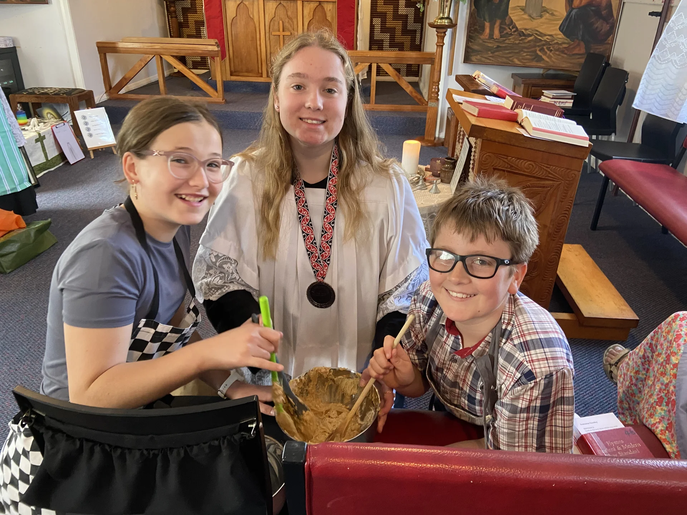
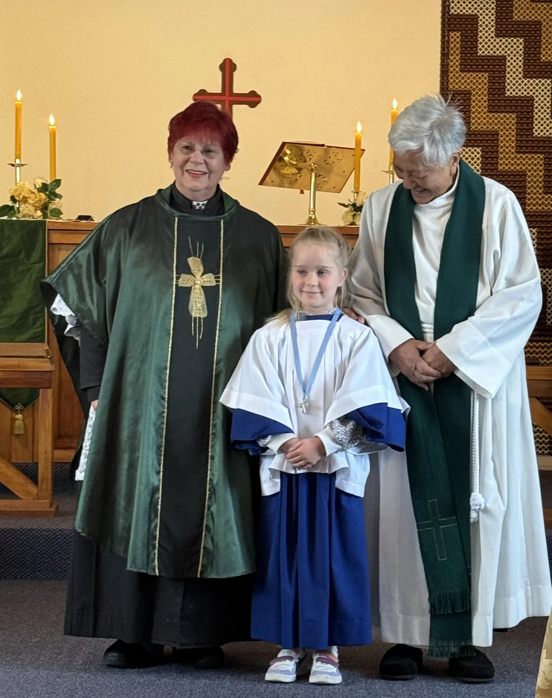

Atrium
Atrium is a gentle, guided program for children, helping them listen to God, learn the stories of our faith, and grow as a community.

Thursdays, 3:30 pm to 4:45 pm
Instead of Sunday School: a fun after-school activity.
Follows the school year
From the second week of each term to the last week. Term 4 runs until around mid-December.
At the church
131 Cole Street, Masterton. Pick up from the church at 4:45 pm.
How a session runs
The weekly sessions strike a good balance between structure and child-friendly fun.
3:30 pm: walk-in and welcome
Everything kicks off at 3:30 PM, right after the kids have had their afternoon snack, so they’re settled and ready. We start with a formal walk-in and a welcoming hello, creating a respectful but relaxed atmosphere.
Presentation or story
The core of the program is a carefully put-together presentation or story. This structured activity always focuses on a specific biblical or faith-based theme for the week, helping children gradually build their understanding of faith. To keep things fresh and connected to the wider church year, the weekly theme sometimes ties in with major seasons or holidays, like Advent, Lent, or big feast days.
Free time to explore
After the teaching time, children get a period of free time. This gives them a chance to absorb the lesson and explore the environment at their own pace. They’re encouraged to use the variety of resources in the specially stocked activity drawers, which contain materials for crafts, quiet thinking, and play, all subtly linked to the program’s themes.
A shared story
The session wraps up with one final, shared activity. We read a story aloud from a simplified children’s Bible. This reading reinforces the main scriptural message the congregation is meant to take away, cementing the spiritual lesson in a final, memorable way.
4:45 pm: prayers, song and home
The whole program finishes at 4:45 PM with communal prayers and a song, offering a peaceful and thoughtful end to their time together.

“Atrium is a gentle, guided programme for all ages, helping us listen for God, learn the stories of our faith, and grow as a community.”
Rev Liz Greville works alongside several catechists in our atrium, using the Catechesis of the Good Shepherd program.
Meet Rev LizTerm dates and pick-up
The Atrium program generally follows the school year. It usually starts in the second week of each school term and continues until the last week of the term. Because school end dates can vary, especially at the end of the year, the Term 4 session is uniquely scheduled to run until around mid-December, making sure the program covers the important lead-up to Christmas.
When the program finishes at 4:45 PM, we have a clear dismissal process. Children can be picked up directly from the church by their parents or guardians, or, if we have permission, they can walk home on their own. This consistent timing and clear structure guarantee a reliable and spiritually enriching environment for everyone.
Ask Rev Liz about AtriumKōrero mai: talk to us
The quickest way to reach us is by phone. Call any of our ministry team with questions about services, Atrium, the marae or visiting for the first time.
- Rev'd Emily BartlettCo-priest021 053 6731
- Rev'd Liz GrevilleCo-priest in charge027 474 5200
- Deacon Richard JacksonDeacon027 811 0006
- Rev'd Robin IrwinSecretary027 486 2714
- 131 Cole Street, Masterton 5810, near Douglas Park School. Get directions
- Sunday service 9:30 am every week, followed by morning tea